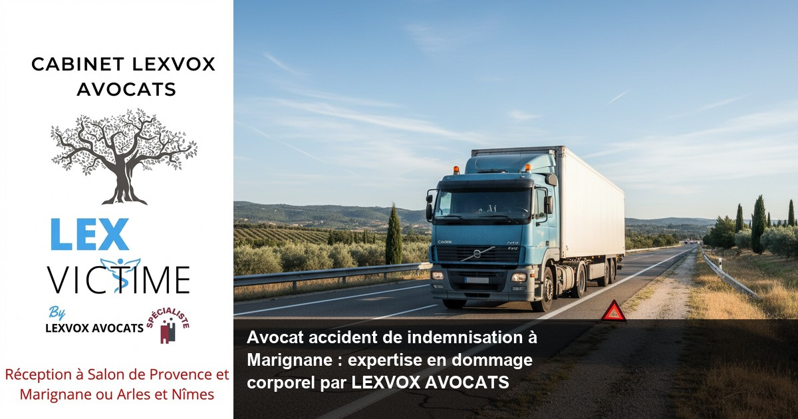

Accident de la route — Marignane
Avocat accident de camion à Marignane : indemnisation et dommage corporel

— Par Me Patrice Humbert, avocat au barreau d'Aix-en-Provence
Suite à un accident de camion à Marignane, obtenir une indemnisation juste nécessite l'expertise d'un avocat spécialisé en dommage corporel. Me Patrice Humbert, premier avocat certifié IA de France avec plus de 20 ans d'expérience exclusive, vous accompagne dans votre procédure d'indemnisation depuis le bureau LEXVOX de Marignane. Consultation gratuite 30 minutes au 04 90 54 58 10.
Obtenir la meilleure indemnisation possible : indemnisation des victimes et droit du dommage corporel à Marignane
La spécificité des accidents de camion à Marignane
Les accidents de camion sur les axes routiers de Marignane, notamment l'A7, l'A55 et la D9, présentent des enjeux particuliers en matière d'indemnisation des victimes. La proximité de l'aéroport Marseille-Provence et de la zone industrielle dense génère un trafic poids lourds important, augmentant les risques d'accidents graves.
Selon l'expérience du cabinet (20+ ans, centaines de dossiers), les accidents impliquant des poids lourds entraînent des préjudices corporels souvent plus sévères que les accidents entre véhicules légers. La masse et la vitesse des camions occasionnent des dommages considérables, nécessitant une expertise médicale approfondie pour évaluer l'intégralité de vos préjudices.
Le droit du dommage corporel : un domaine complexe
Le droit du dommage corporel français impose à chaque victime d'un accident le droit à une réparation intégrale de l'ensemble de ses préjudices. Cette réparation du dommage corporel couvre tous les postes de préjudice reconnus par la jurisprudence : préjudices patrimoniaux et extra-patrimoniaux, temporaires et définitifs.
L'indemnisation préjudice corporel suit des barèmes précis mais nécessite une analyse personnalisée de chaque situation. Les compagnies d'assurance appliquent souvent des référentiels minimaux, d'où l'importance de faire appel à un avocat spécialisé en indemnisation pour défendre vos droits des victimes.
L'importance de l'accompagnement juridique spécialisé
Obtenir la meilleure indemnisation possible requiert l'assistance d'un avocat expérimenté en dommage corporel. L'avocat spécialiste maîtrise les subtilités du droit de la réparation et peut faire appel à des médecins-conseils de victimes pour contester les expertises défavorables.
Le cabinet LEXVOX, avec sa spécialisation CNB en dommage corporel, dispose de l'expertise nécessaire pour défendre les victimes face aux compagnies d'assurance. Notre expérience de plus de 20 ans nous permet d'identifier tous les postes de préjudice et d'obtenir une indemnisation juste pour nos clients.
Accompagner par un avocat : un accident de la route et faire appel à un avocat à Marignane
Les premiers réflexes après un accident de camion
Lorsque vous êtes victime d'un accident de la route impliquant un poids lourd à Marignane, plusieurs démarches immédiates s'imposent. Après avoir reçu les premiers soins à l'Hôpital Nord Marseille ou à la Clinique de Vitrolles, il convient de préserver vos droits à l'indemnisation.
La présence d'un avocat dès les premiers échanges avec l'assureur peut s'avérer déterminante. En effet, les déclarations initiales et les premiers documents médicaux constituent la base de votre dossier d'indemnisation. Un avocat de victimes expérimenté saura vous conseiller sur les précautions à prendre.
L'expertise contradictoire : un enjeu majeur
L'expertise médicale constitue l'étape cruciale de toute procédure d'indemnisation. Le médecin-conseil de l'assureur tend naturellement à minimiser vos préjudices, tandis qu'un médecin-conseil de victimes défendra vos intérêts légitimes.
Selon l'expérience du cabinet (20+ ans, centaines de dossiers), l'assistance d'un avocat lors de l'expertise médicale permet d'améliorer significativement l'indemnisation obtenue. L'avocat veille au respect de la procédure, pose les bonnes questions au médecin expert et s'assure que tous les préjudices sont correctement évalués.
La négociation avec les compagnies d'assurance
Face aux compagnies d'assurance, la victime d'un accident se trouve souvent en position de faiblesse. Les assureurs disposent de services juridiques spécialisés et de barèmes internes généralement défavorables aux victimes. Accompagner par un avocat rééquilibre le rapport de force et garantit une négociation équitable.
L'avocat expert en indemnisation connaît les référentiels judiciaires applicables et peut contester les propositions insuffisantes. Il maîtrise également les techniques de négociation amiable permettant d'éviter une procédure judiciaire longue et coûteuse, tout en obtenant une réparation intégrale.
Expert en indemnisation : défense des victimes et réparation intégrale à Marignane
L'expertise LEXVOX en dommage corporel
Le cabinet LEXVOX AVOCATS développe depuis plus de 20 ans une expertise exclusive en dommage corporel. Cette spécialisation nous permet d'appréhender tous les aspects techniques et médicaux des dossiers d'indemnisation, depuis les accidents de la vie courante jusqu'aux accidents de la route les plus complexes.
Notre implantation à Marignane nous donne une connaissance approfondie des particularités locales : axes routiers accidentogènes, établissements de soins de référence, habitudes des tribunaux d'Aix-en-Provence. Cette proximité facilite le suivi de vos démarches et optimise votre prise en charge.
La réparation intégrale : principe et application
Le principe de réparation intégrale, consacré par le droit civil français, impose l'indemnisation de tous les préjudices subis par la victime d'accident. Cette réparation du préjudice corporel couvre les pertes économiques (perte de revenus, frais médicaux) et les préjudices extra-patrimoniaux (souffrances, préjudice esthétique, d'agrément).
Obtenir une réparation intégrale nécessite une évaluation exhaustive de chaque poste de préjudice. Les séquelles d'un accident de camion peuvent avoir des répercussions sur votre vie professionnelle, familiale et sociale pendant de nombreuses années. L'avocat spécialisé s'assure que cette dimension temporelle soit prise en compte dans l'indemnisation.
Les spécificités du contentieux poids lourds
Les accidents impliquant des véhicules de transport de marchandises présentent des caractéristiques particulières en matière d'indemnisation. La responsabilité peut être partagée entre plusieurs intervenants : transporteur, donneur d'ordre, assureurs multiples. Cette complexité juridique nécessite l'intervention d'un avocat expert maîtrisant ces questions spécialisées.
Selon l'expérience du cabinet (20+ ans, centaines de dossiers), les accidents de camion génèrent souvent des préjudices importants justifiant la mise en œuvre de garanties d'assurance élevées. L'expertise du cabinet LEXVOX permet d'identifier toutes les sources d'indemnisation et d'optimiser votre réparation.
Les erreurs médicales et leur indemnisation
Au-delà des accidents de camion, notre expertise s'étend à la défense des victimes d'erreurs médicales. Les victimes d'erreurs médicales font face à des procédures complexes impliquant les métiers de la santé, les assurances professionnelles et parfois l'Office National d'Indemnisation des Accidents Médicaux (ONIAM).
La loi du 4 mars 2002 relative aux droits des malades et à la qualité du système de santé a instauré des mécanismes spécifiques d'indemnisation. Une maladie infectieuse contractée lors d'un soin ou une erreur de diagnostic peuvent justifier une indemnisation au même titre qu'un accident de la route.
Accident de la vie : avocat de victimes et avocat spécialisé à Marignane
L'accompagnement personnalisé des victimes
Chaque accident de la vie bouleverse l'existence de la victime et de ses proches. Au-delà des aspects juridiques et médicaux, l'avocat de victimes joue un rôle d'accompagnement humain dans cette épreuve difficile. Le cabinet LEXVOX privilégie une approche empathique, centrée sur vos besoins et vos préoccupations.
Notre implantation locale à Marignane facilite les rendez-vous et le suivi de votre dossier. Vous pouvez nous contacter facilement au 04 90 54 58 10 pour toute question sur l'évolution de votre indemnisation. Cette proximité géographique renforce la relation de confiance indispensable à la défense de vos intérêts.
Les accidents de la vie courante
Les accidents de la vie ne se limitent pas aux accidents de la route. Chutes, accidents domestiques, agressions, accidents de sport... tous ces événements peuvent justifier une indemnisation si la responsabilité d'un tiers est engagée. L'avocat spécialisé analyse les circonstances de l'accident pour identifier les responsables potentiels.
Selon l'expérience du cabinet (20+ ans, centaines de dossiers), de nombreuses victimes ignorent leurs droits à indemnisation en cas d'accident de la vie courante. L'expertise LEXVOX permet d'explorer toutes les pistes de responsabilité civile, y compris les plus complexes impliquant des collectivités publiques ou des professionnels.
La prise en charge psychologique
Un accident grave engendre souvent un traumatisme psychologique nécessitant une prise en charge spécialisée. Ce préjudice d'ordre psychologique doit être reconnu et indemnisé au même titre que les séquelles physiques. L'avocat veille à ce que cette dimension soit prise en compte dans l'expertise médicale.
La Psychologie clinique distingue plusieurs types de troubles post-traumatiques : stress post-traumatique, dépression, troubles anxieux. Ces troubles peuvent perdurer bien au-delà de la consolidation des blessures physiques et justifient une indemnisation spécifique au titre du préjudice extra-patrimonial.
Une indemnisation : assurance et expertise à Marignane
Le rôle des compagnies d'assurance
L'indemnisation d'un accident implique généralement une ou plusieurs compagnies d'assurance. L'assureur du responsable de l'accident doit garantir la réparation des dommages causés à la victime. Cependant, les intérêts de l'assureur divergent naturellement de ceux de la victime : minimiser l'indemnisation pour préserver ses résultats financiers.
Cette divergence d'intérêts justifie pleinement l'intervention d'un avocat pour défendre les droits des victimes. L'avocat spécialisé en indemnisation connaît les stratégies des assureurs et peut anticiper leurs arguments pour mieux les contrer. Il dispose également de barèmes jurisprudentiels actualisés pour évaluer le montant légitime de l'indemnisation.
L'expertise médicale : enjeu central de l'indemnisation
L'expertise médicale détermine l'étendue des préjudices et leur impact sur votre vie quotidienne. Cette évaluation conditionne directement le montant de votre indemnisation. Il est donc crucial de préparer soigneusement cette étape avec l'assistance d'un avocat expérimenté.
Le médecin expert désigné par l'assureur n'est pas votre médecin. Son rôle consiste à évaluer vos préjudices de manière objective, mais cette objectivité peut jouer en votre défaveur si vous n'êtes pas correctement accompagné. L'avocat s'assure que tous vos préjudices sont exposés au médecin expert et correctement retranscrits dans le rapport d'expertise.
Les garanties d'assurance complémentaires
Au-delà de l'assurance responsabilité civile du responsable, d'autres garanties peuvent intervenir dans votre indemnisation. Votre propre assurance automobile (garantie du conducteur), votre assurance habitation (accidents de la vie privée), voire votre mutuelle santé peuvent prévoir des indemnisations complémentaires.
L'avocat expert en indemnisation identifie toutes ces sources potentielles d'indemnisation et optimise leur articulation. Cette approche globale permet souvent d'obtenir une indemnisation complémentaire significative, particulièrement utile en cas de préjudices importants ou de responsabilité partagée.
Préjudice et honoraire : votre avocat à Marignane
La structure d'honoraires transparente de LEXVOX
Le cabinet LEXVOX pratique une politique d'honoraires transparente, adaptée aux dossiers de dommage corporel. Nos honoraires comprennent une part fixe à partir de 700 EUR HT pour la constitution du dossier, complétée par une part au résultat de 10 à 15% de l'indemnisation obtenue.
Cette structure d'honoraires aligne nos intérêts sur les vôtres : plus l'indemnisation obtenue est élevée, plus notre rémunération est importante. Nous avons donc tout intérêt à défendre vos droits avec la plus grande détermination. La part au résultat n'est due qu'en cas de succès, ce qui limite votre risque financier.
L'évaluation des différents postes de préjudice
L'indemnisation d'un accident de camion couvre de nombreux postes de préjudice qu'il convient d'évaluer précisément. Les préjudices patrimoniaux comprennent les pertes de revenus (ITT, IPP), les frais médicaux, les frais d'adaptation du domicile ou du véhicule, les frais de tierce personne.
Les préjudices extra-patrimoniaux, plus difficiles à quantifier, incluent les souffrances endurées, le préjudice esthétique, le préjudice d'agrément, le préjudice sexuel. Chaque poste de préjudice fait l'objet d'une évaluation distincte selon des barèmes jurisprudentiels que maîtrise parfaitement l'avocat spécialisé.
La consultation gratuite : un premier diagnostic
Le cabinet LEXVOX propose une consultation gratuite de 30 minutes pour évaluer vos droits à indemnisation. Cette première analyse permet de déterminer la viabilité juridique de votre dossier et d'estimer les enjeux financiers. Vous pouvez prendre rendez-vous au 04 90 54 58 10 ou par email à contact@avocat-lexvox.com.
Cette consultation gratuite vous permet de rencontrer Me Patrice Humbert, premier avocat certifié IA de France, et de bénéficier de son expertise de plus de 20 ans en dommage corporel. Vous pourrez ainsi prendre une décision éclairée sur l'opportunité d'engager une procédure d'indemnisation avec l'assistance du cabinet.
Les frais et débours
Au-delà des honoraires d'avocat, une procédure d'indemnisation génère des frais annexes : frais d'expertise médicale contradictoire, frais d'huissier, frais de procédure judiciaire le cas échéant. Ces débours sont généralement avancés par le cabinet et récupérés sur l'indemnisation finale.
L'avocat vous informe précisément de tous les frais prévisibles dès l'engagement de votre dossier. Cette transparence financière vous permet de prendre votre décision en toute connaissance de cause. En cas de procédure judiciaire, les frais et dépens peuvent parfois être mis à la charge de la partie adverse.
Procédure d'indemnisation à Marignane : les étapes avec LEXVOX AVOCATS
Étape 1 : L'analyse initiale du dossier
La première étape consiste en une analyse approfondie des circonstances de l'accident et de vos préjudices. Cette analyse permet de déterminer les responsabilités, d'identifier les assureurs concernés et d'évaluer les enjeux de l'indemnisation. Le cabinet LEXVOX procède à cette analyse dès la consultation initiale.
Cette étape de la procédure comprend la collecte de toutes les pièces utiles : constat amiable, procès-verbal de police, certificats médicaux initiaux, arrêt de travail. L'avocat peut vous assister dans la constitution de ce dossier médical et administratif, particulièrement important pour la suite de la procédure.
Étape 2 : La déclaration et les premiers échanges
La déclaration de l'accident auprès de l'assureur doit être effectuée dans les délais légaux, généralement cinq jours ouvrés. Cette déclaration conditionne la prise en charge de votre dossier. L'avocat peut vous assister dans cette démarche pour éviter toute erreur préjudiciable.
Les premiers échanges avec l'assureur sont déterminants pour l'orientation de votre dossier. L'assureur propose généralement une indemnisation provisionnelle pour couvrir vos frais immédiats. L'avocat analyse ces propositions et négocie si nécessaire des montants plus appropriés à votre situation.
Étape 3 : Le suivi médical et la consolidation
La phase de soins constitue une étape cruciale de votre dossier d'indemnisation. Il convient de suivre scrupuleusement les prescriptions médicales et de documenter l'évolution de votre état de santé. Chaque consultation, chaque examen, chaque traitement doit être consigné dans votre dossier médical.
La consolidation médicale marque la stabilisation de votre état de santé. Cette étape, validée par votre médecin traitant, permet d'évaluer définitivement vos séquelles et de procéder à l'indemnisation des préjudices définitifs. L'avocat vous conseille sur le moment optimal pour déclarer la consolidation.
Étape 4 : L'expertise médicale contradictoire
L'expertise médicale constitue l'étape technique majeure de toute procédure d'indemnisation. Le médecin expert, généralement désigné par l'assureur, évalue l'ensemble de vos préjudices selon une méthodologie précise. Cette expertise détermine largement le montant de votre indemnisation finale.
L'assistance d'un avocat lors de cette expertise s'avère généralement déterminante pour le résultat final. L'avocat prépare cette expertise, vous accompagne le jour J et peut faire appel à un médecin-conseil pour défendre vos intérêts. Cette préparation minutieuse permet d'optimiser l'évaluation de vos préjudices.
Étape 5 : La négociation amiable
Sur la base du rapport d'expertise, l'assureur formule une offre d'indemnisation qu'il convient d'analyser précisément. Cette offre doit couvrir l'intégralité de vos préjudices selon les barèmes jurisprudentiels en vigueur. L'avocat expert procède à cette analyse et négocie les montants insuffisants.
La négociation amiable permet généralement d'aboutir à un accord satisfaisant sans procédure judiciaire. Cette solution présente l'avantage de la rapidité et de l'économie des frais de justice. Selon l'expérience du cabinet (20+ ans, centaines de dossiers), plus de 80% des dossiers trouvent une solution amiable acceptable.
Étape 6 : La saisine judiciaire si nécessaire

Vos questions sur avocat accident de indemnisation à marignane : expertise en
Combien de temps dure une procédure d'indemnisation après un accident de camion ?
La durée d'une procédure d'indemnisation varie selon la gravité de vos préjudices et la complexité du dossier. Pour un accident avec séquelles légères, comptez 6 à 12 mois entre l'accident et l'indemnisation finale. En cas de préjudices graves nécessitant une longue période de soins, la procédure peut durer 2 à 3 ans. Selon l'expérience du cabinet (20+ ans, centaines de dossiers), l'assistance d'un avocat spécialisé permet généralement d'accélérer la procédure. L'avocat anticipe les difficultés, prépare efficacement les expertises et négocie de manière constructive avec les assureurs. Cette expertise peut réduire significativement les délais d'indemnisation.
Puis-je obtenir des indemnisations provisionnelles en attendant l'indemnisation définitive ?
Oui, vous pouvez prétendre à des indemnisations provisionnelles pour couvrir vos besoins immédiats : frais médicaux, perte de revenus, frais de tierce personne. Ces provisions sur indemnisation sont déduites de l'indemnisation finale mais permettent de faire face aux difficultés financières consécutives à l'accident. L'avocat négocie ces provisions avec l'assureur et peut saisir le juge des référés en cas de refus injustifié. Ces procédures d'urgence permettent d'obtenir rapidement des fonds nécessaires à votre rétablissement. Le montant des provisions dépend de l'évaluation provisoire de vos préjudices et de leur évolution prévisible.
Quels sont les délais de prescription pour une action en indemnisation ?
L'action en indemnisation se prescrit par 10 ans à compter de la date de consolidation de vos blessures, conformément au droit civil. Ce délai relativement long vous laisse le temps nécessaire pour évaluer l'étendue définitive de vos préjudices. Toutefois, il convient d'agir rapidement pour préserver vos droits et éviter la déperdition des preuves. Certaines formalités doivent être accomplies dans des délais plus brefs : déclaration à l'assureur dans les 5 jours, dépôt de plainte dans les 3 ans en cas d'infractions pénales. L'avocat veille au respect de tous ces délais pour préserver l'intégralité de vos droits à indemnisation.
Comment se déroule une expertise médicale d'indemnisation ?
L'expertise médicale se déroule généralement au cabinet du médecin expert ou dans un établissement de soins. Cette consultation, plus longue qu'une consultation médicale classique, comprend un interrogatoire détaillé sur les circonstances de l'accident, l'évolution de vos troubles et leur impact sur votre vie quotidienne. Le médecin expert procède ensuite à un examen clinique complet et peut prescrire des examens complémentaires si nécessaire. Il évalue chaque poste de préjudice selon les référentiels en vigueur. L'assistance d'un avocat permet de s'assurer que tous vos préjudices sont correctement exposés et évalués par l'expert.
Que faire si je ne suis pas d'accord avec le rapport d'expertise ?
En cas de désaccord avec les conclusions du rapport d'expertise, plusieurs recours sont possibles. L'avocat peut contester les conclusions erronées par courrier motivé à l'assureur et demander une expertise complémentaire. Si cette démarche amiable échoue, la saisine du tribunal permet de faire désigner un nouvel expert judiciaire. L'expertise judiciaire, contradictoire par nature, offre de meilleures garanties d'impartialité. Chaque partie peut faire valoir ses arguments et faire appel à des conseils techniques. Cette procédure, bien que plus longue, permet souvent de corriger les erreurs ou insuffisances de la première expertise.
Quels documents dois-je conserver après un accident de camion ?
Vous devez conserver précieusement tous les documents relatifs à votre accident : constat amiable, procès-verbal de police, certificats médicaux initiaux, ordonnances, feuilles de soins, arrêts de travail, justificatifs de frais. Ces pièces constituent la base de votre dossier d'indemnisation. Il convient également de tenir un journal de bord décrivant l'évolution de votre état de santé, les difficultés rencontrées au quotidien, l'impact sur votre vie familiale et professionnelle. Ces témoignages personnels, bien que subjectifs, éclairent le médecin expert sur la réalité de vos préjudices et peuvent influencer favorablement son évaluation.
Synthèse : votre droit à la réparation intégrale ?
Le droit du dommage corporel garantit à toute victime d'un accident le droit à une indemnisation intégrale de ses préjudices. Cette indemnisation préjudice corporel nécessite l'intervention d'un avocat spécialiste maîtrisant les subtilités de cette matière complexe. Lorsque vous êtes victime d'un accident de camion à Marignane, obtenir une indemnisation juste et complète constitue votre droit le plus légitime. L'indemnisation intégrale couvre tous les postes de préjudice reconnus par la jurisprudence, depuis l'arrêt de travail jusqu'aux séquelles définitives. Cette réparation du dommage corporel doit permettre de vous replacer, autant que possible, dans la situation qui aurait été la vôtre sans l'accident. Accompagner par un avocat expérimenté s'avère généralement déterminant pour faire respecter ces droits des victimes face aux stratégies des assureurs. L'avocat spécialisé en indemnisation maîtrise tous les aspects de la réparation du préjudice corporel et peut identifier chaque poste de préjudice justifiant une indemnisation. Cet avocat expert sait défendre les victimes en s'appuyant sur les référentiels jurisprudentiels les plus favorables. Faire appel à un avocat dès les premiers échanges suite à un accident permet d'optimiser la procédure d'indemnisation et d'éviter les erreurs préjudiciables. Le médecin-conseil de victimes joue un rôle complémentaire crucial en contestant les évaluations insuffisantes de chaque poste de préjudice. Cette expertise médicale contradictoire permet souvent d'obtenir la meilleure indemnisation possible, bien supérieure aux propositions initiales. Les indemnisations obtenues grâce à cette approche professionnelle témoignent de l'importance de ces accidents de la vie pour les victimes et leurs proches. Une indemnisation complémentaire peut être recherchée auprès de multiples intervenants lorsque vous êtes victime d'un accident impliquant plusieurs responsables. Les victimes d'accidents de la route bénéficient de protections particulières, notamment la présence d'un avocat lors des expertises médicales. Cette assistance d'un avocat rééquilibre les rapports de force avec la compagnie d'assurance du responsable de l'accident. La défense des victimes d'accidents nécessite une analyse approfondie des circonstances de l'accident et de ses conséquences sur la vie de chaque victime d'accident. Les victimes d'accidents doivent savoir que les victimes d'accidents de la route disposent de droits spécifiques qu'un accident ne peut remettre en cause. La procédure d'indemnisation vise à réparer intégralement les victimes d'accident, qu'il s'agisse de cas d'accident simples ou complexes impliquant plusieurs parties.
Procédure d'indemnisation à Marignane : les étapes avec LEXVOX ?
Première consultation gratuite — 30 min
Besoin d'un avocat spécialisé à Marignane ? Nous évaluons votre dossier gratuitement et vous indiquons vos droits à réparation.
Cabinet LEXVOX AVOCATS — Me Patrice Humbert — Spécialisation CNB dommage corporel — Bureaux à Aix-en-Provence, Salon-de-Provence, Arles et Marignane